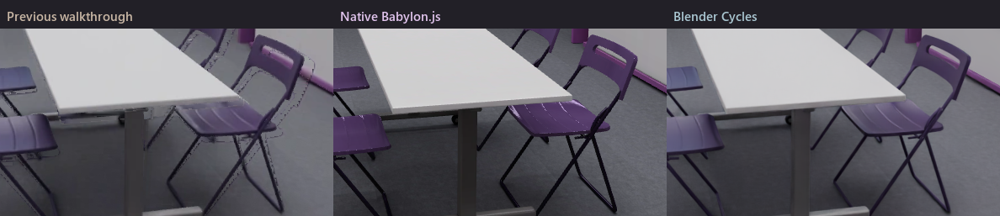
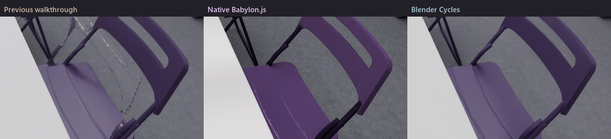
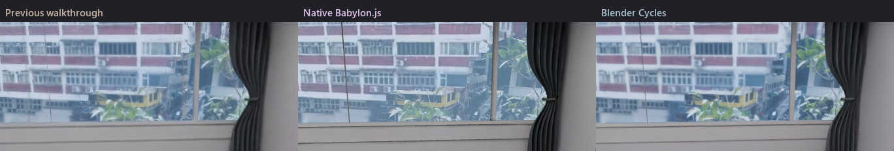
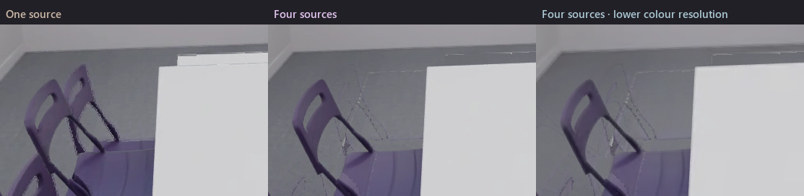
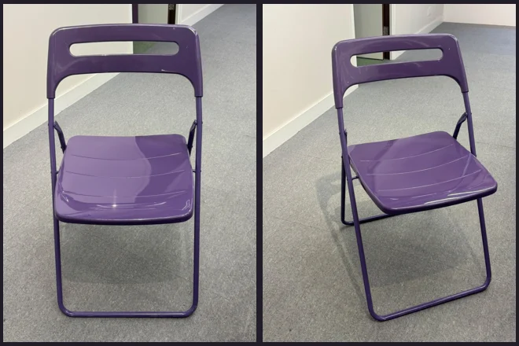
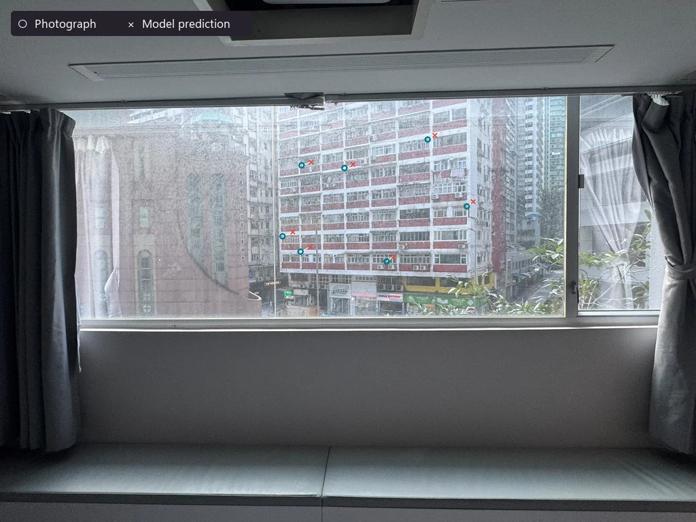

Meeting room comparison
Follow the chair from the doorway, through a half-metre side-step, to a stop beside the white table.
At 2.65–3.65 s the camera moves exactly 0.50 m to the right while holding its direction. Watch the legs against the carpet and the window behind the hand slot. At 3.65–4.65 s it stays still. It then looks diagonally across the table and backs away. The source frames are 1072 × 836 each. The film shows them at half size, with synchronized labels.
Chairs, carpet and window
Open each crop to inspect its original pixels. All three images use the same recorded position, camera height, lens and time.



The worst outline frame
Frame 70 at 4.67 s, eye (1.882, 3.665, 1.620) m. We compared the visible chair ID in Babylon.js to independent CPU ray intersections against the authored chair triangles and the original room's occluding geometry. The largest frame-level 95th-percentile edge error was 1.0 px across 80 distinct poses. The largest individual edge discrepancy was 40.6 px at (803, 830), on a small silhouette detail near the bottom edge. White edges coincide, cyan is Babylon.js and coral is the independent mask. In frames 55–69 the stopped native image was identical pixel for pixel.
Previous frame ↗Native frame ↗Cycles frame ↗Silhouette overlay ↗


Where the original duplicate first appears
In the previous public renderer (revision 15), the diagnostic camera was (1.55, 3.47, 1.62) m, yaw 0.12 rad and pitch −0.23 rad. At image pixel (327, 513), the geometry ray lands on carpet. Source camera 53 expects the floor at 5.086 m, but its recorded first surface is a purple chair at 2.719 m. The dark outline appears when this single source is projected on the floor and is still visible after the four-source blend. The other three source cameras report the expected floor depth to within 0.011 m.

At a fixed 1072 × 836 drawing buffer, walking used 1536 × 768 colour views in the sampled frame. At rest the four views were 3072 × 1536. Replacing only their colour textures with 1536 × 768 versions kept the camera, depth and blend weights constant; it softened detail and retained the displaced outline.
What the native scene draws


The seat, open handle, hinges, folded tube and U-shaped feet come from the revision-15 Blender master. Each rendered pixel belongs to a surface with its own UV coordinates. Cycles supplies the fixed diffuse lighting and floor contact shade. Babylon.js evaluates the long ceiling-light reflections against the current view direction, the surface normal and roughness. The matte carpet uses fibre detail derived from the photographed office tiles.
The reference column is a separate 24-sample, denoised Cycles render of the existing master. Its geometry, lens, original lighting and AgX colour transform were kept as reference. The acceptance route was reserved before material calibration.
The window in perspective


The curved podium has front edges, undersides, round supports and recessed glazing. The red-and-white corner has a connected return. The canopy is a separate fixed foreground surface with cut-out leaves. Distant buildings and sky use the original window photographs. An aperture test confines outdoor pixels to the window.
During the half-metre step, a projected canopy vertex shifted 34.2 px and a front-façade vertex shifted 9.3 px. These are projections of tracked model points.
Photo 05 was held out of the window textures and exterior fit. The indoor camera was estimated from six frame and bench points. Across 225 matched façade features, median registration error was 32.2 px (1.88% of the visible opening), worst 34.6 px. The proposed 0.5% target is still open. The indoor camera anchors also have 19.1 px median residual, so this test combines camera and building-placement error.
Compare the actual photograph with the native camera view ↗View the original reference composition ↗


Sources are the supplied office photographs of 18–19 November 2026, the window geometry and units of the existing Blender master, and its original materials. The exterior uses estimated metric depths. The front corner is roughly 35 m beyond the opening. The façades, slab depths and columns have no survey-grade dimensions.
Drawing and download measurements
Desktop Chrome mobile emulation, 390 × 844 CSS pixels, DPR 2, 780 × 1688 drawing buffer, WebGPU. Three cold runs of each build at 20 Mbit/s downstream with 50 ms network latency on the local test server. This measures browser frame cadence during motion. Median run results are shown, with the longest observed interval across runs.
| Build | Ready | Initial transfer | During walk | Motion P95 | Longest gap |
|---|---|---|---|---|---|
| Previous | 7.03 s | 13.61 MB | ≥ 14.85 MB | 7.1 ms | 13.9 ms |
| Native | 3.41 s | 7.12 MB | 0.00 MB | 7.1 ms | 8.1 ms |
Decimal MB. The legacy test opened at Meeting room and selected the hotel automatically. The native sample opens directly at the door. A legacy request was still outstanding at the cut-off for at least one run. The native scene had finished all requests. Production CDN timings can vary.
Try your phone
A physical handset has yet to be measured. Tap Measure walk, move and turn for several seconds, then tap Finish test. It shows your drawing resolution, P95 and longest frame interval. The proposed handset thresholds are P95 ≤ 33 ms and maximum ≤ 100 ms. The cold-transfer targets are ≤ 8 MB initially, ≤ 5 s to walk and ≤ 2 MB more along the route.
Independent portrait checks exercised the WebGL2 fallback, held touch, cancellation, keyboard release, free lateral movement and tap-to-walk followed by tap-to-stop.
Open the walkthrough →Download measurements and camera path ↓